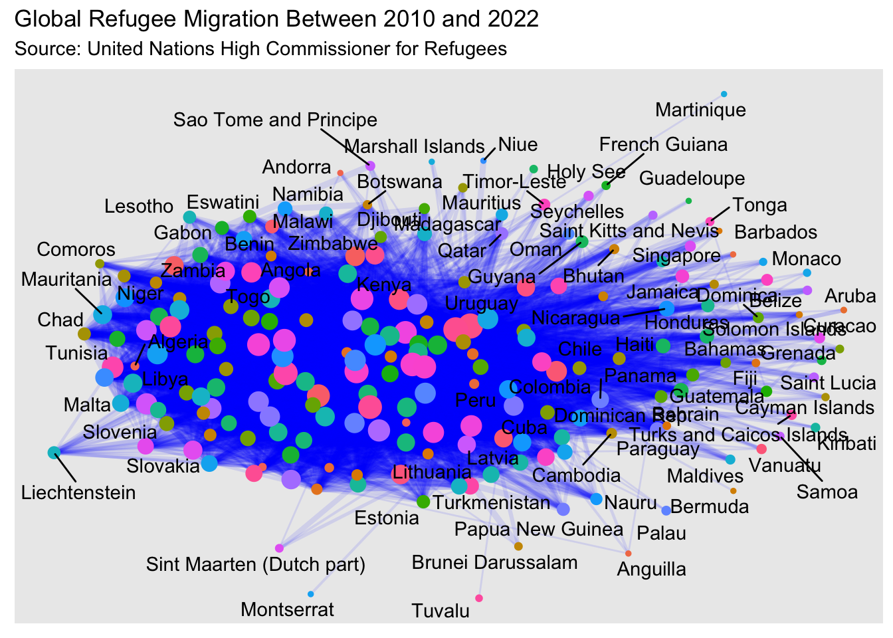
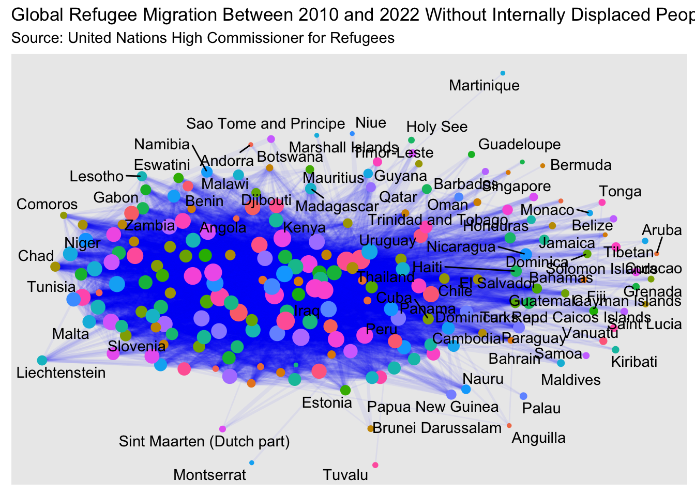
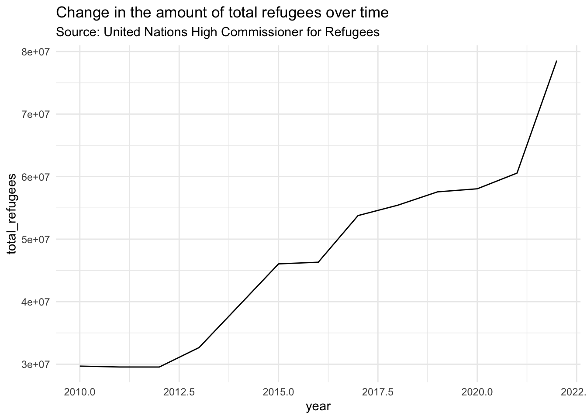
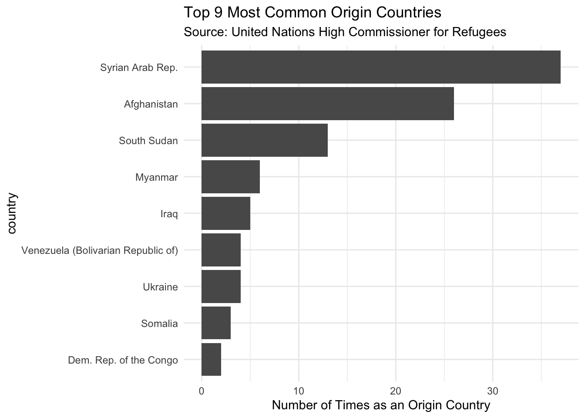
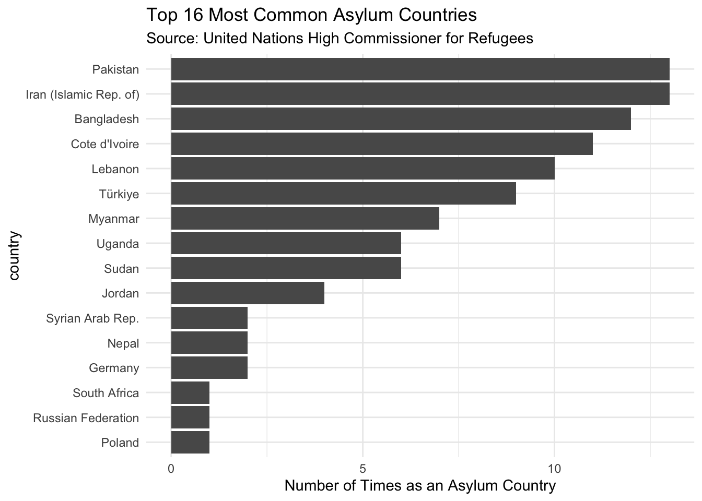

The refugee crisis has been a global issue for a long time and is a heavily debated topic. Wars and natural disasters regularly lead to the displacement of people from their home countries (origin countries). As they are forced to escape to other countries (asylum countries) seeking asylum, those new countries are faced with how to find the means to support the new influx of people which can at times strain their own economies. In many ways, however, refugees can be beneficial to asylum countries, contributing economically and socially to their structure.
On the tidy tuesday repository, I was able to find a very large data set called the population.csv which contains information about global refugee migration since 2010 collected by the United Nations High Commissioner for Refugees. Each row in the data set is a year with a particular combination of countries. In each row there is a country of origin variable and an asylum country variable. It is important to note that in the data set there are some countries where the asylum and origin country are the same, this is because of internally displaced people (IDPS). IDPS are people who are refugees within the same country, which is why the origin and asylum country is the same.
Question of interest
Which countries accept the most refugees and the least? What is the overall trend in displaced peoples over time? Which are the most common countries of origin?
# A tibble: 64,809 × 16
year coo_name coo coo_iso coa_name coa coa_iso refugees asylum_seekers
<dbl> <chr> <chr> <chr> <chr> <chr> <chr> <dbl> <dbl>
1 2010 Afghanist… AFG AFG Afghani… AFG AFG 0 0
2 2010 Iran (Isl… IRN IRN Afghani… AFG AFG 30 21
3 2010 Iraq IRQ IRQ Afghani… AFG AFG 6 0
4 2010 Pakistan PAK PAK Afghani… AFG AFG 6398 9
5 2010 Egypt ARE EGY Albania ALB ALB 5 0
6 2010 China CHI CHN Albania ALB ALB 6 0
7 2010 Palestini… GAZ PSE Albania ALB ALB 5 0
8 2010 Iraq IRQ IRQ Albania ALB ALB 5 0
9 2010 Serbia an… SRB SRB Albania ALB ALB 49 20
10 2010 Türkiye TUR TUR Albania ALB ALB 5 0
# ℹ 64,799 more rows
# ℹ 7 more variables: returned_refugees <dbl>, idps <dbl>, returned_idps <dbl>,
# stateless <dbl>, ooc <dbl>, oip <dbl>, hst <dbl>
Tidying and wrangling the data for a network graph
First I cleaned the data a bit, getting rid of all the unnecessary variables such as all the code ones and renaming the country of origin and country of asylum variables.
Then I created a network data frame, renaming the origin and asylum variables as vertex 1 and 2 respectively. I then made a summarized data frame to make sure no combinations get used twice just because their order is different.
Using the table I just made, I created the below network graph of global refugee migration between 2010 and 2022.
ggraph(networkobj |>mutate(centrality =centrality_authority()),layout ="stress") +geom_edge_link(aes(width = n_countries), alpha =0.1, show.legend =FALSE, colour ="blue") +geom_node_point(aes(colour = label,size = centrality), show.legend =FALSE) +scale_edge_width(range =c(0.5, 3)) +geom_node_text(aes(label = label), repel =TRUE) +labs(title ="Global Refugee Migration Between 2010 and 2022", subtitle ="Source: United Nations High Commissioner for Refugees")
Warning: ggrepel: 124 unlabeled data points (too many overlaps). Consider
increasing max.overlaps

The above network graph is honestly quite challenging to interpret as the data frame is so large, it hard to distinguish node from node and edge from edge. However, I feel that the graph being hard to read still speaks volumes, it shows just how big of an issue refugee migration is. And even though it is hard to interpret, it is still eligible what countries play bigger roles in refugee migration than others, or rather it is easier to distinguish between the smaller countries since they are on the outside, while most of the asylum nations are on the inside.
Revised network graph
In an attempt to rectify the issue of such a big and confusing network graph, I tried to make it with a smaller and cleaner data set which only includes combinations where the origin and asylum country are different, meaning there are no internally displaced people.
Then I created a network data frame, renaming the origin and asylum variables as vertex 1 and 2 respectively. I then made a summarized data frame to make sure no combinations get used twice just because their order is different.
Using the table I just made, I created the below network graph of global refugee migration between 2010 and 2022 without internally displaced people.
ggraph(objnoidps |>mutate(centrality =centrality_authority()),layout ="stress") +geom_edge_link(aes(width = n_countries), alpha =0.05, show.legend =FALSE, colour ="blue") +geom_node_point(aes(colour = label,size = centrality), show.legend =FALSE) +scale_edge_width(range =c(0.5, 3)) +geom_node_text(aes(label = label), repel =TRUE) +labs(title ="Global Refugee Migration Between 2010 and 2022 Without Internally Displaced People", subtitle ="Source: United Nations High Commissioner for Refugees")
Warning: ggrepel: 133 unlabeled data points (too many overlaps). Consider
increasing max.overlaps

While the above graph is slightly better, it is not a big improvement, likely because this “smaller and cleaner” data set is still extremely large. But it is still slightly better. Other ways to improve it would be to sort the countries into regions instead of individual nations, however, I was unsure to do this as it would be tedious and I was not 100% sure how to classify each country.
Lineplot of total displaced people over time
To make a graph of the total amount of refugees displaced between 2010 and 2022, I made a new dataset with a variable total_displaced which is the sum of all the different “types” of refugees in the data set.
ggplot(data = lineplot, aes(x = year, y = total_refugees)) +geom_line() +theme_minimal() +labs(title ="Change in the amount of total refugees over time", subtitle ="Source: United Nations High Commissioner for Refugees")

As can be seen in the above line plot, the amount of total refugees in the data set has increased over time between 2010 and 2022. This could be the result of a series of reasons, the war in Ukraine for example in 2022 could explain the sharp increase seen in the slope of the plot. Another reason why the number of refugees has increased over time is likely due to the effects of increasing climate change. Climate change has led to an abnormally high number of natural disasters in recent years, displacing even more people.
Barplots of origin and asylum countries
I made two separate data sets, one with only origin countries and the other with only asylum countries. I then created summarized versions of these data sets to see the number of times each country comes up as an origin and/or asylum country, to show which countries are sending and receiving the most refugees. I also arranged both data sets in order of descending total_displaced and sliced the top 100, this will just make the data sets smaller so that the graphs will not be too over crowded.
barplot_origin <- sum_origin |>mutate(country =fct_reorder(country, n))ggplot(data = barplot_origin, aes(x = country, y = n)) +geom_col() +coord_flip() +theme_minimal() +labs(y ="Number of Times as an Origin Country", title ="Top 9 Most Common Origin Countries", subtitle ="Source: United Nations High Commissioner for Refugees")

The above barplot shows that the most common origin country is the Syrian Arab Republic, which makes sense since the Syrian Civil War has been ongoing since 2011, causing a lot of refugees to flee. The other countries, such as South Sudan and Afghanistan make sense since they have all been involved in several ongoing conflicts. Interestingly while, Ukraine did make it on this top list, it is far down in the graph. this is because the war started in 2022 which is the last year of the data set meaning that the war was pretty early on when the data was collected. Additionally, Ukraine is a relatively small country so it would by default have less refugees.
barplot_asylum <- sum_asylum |>mutate(country =fct_reorder(country, n)) ggplot(data = barplot_asylum, aes(x = country, y = n)) +geom_col() +coord_flip() +theme_minimal() +labs(y ="Number of Times as an Asylum Country", title ="Top 16 Most Common Asylum Countries", subtitle ="Source: United Nations High Commissioner for Refugees")

The above barplot of the top asylum countries is more surprising than the one of the origin countries, since some of the countries are the same. My theory of this is that often times, refugees go to nearby countries at the very least as an initial step towards safety, regardless of whether or not these countries are in conflict themselves. Turkey makes sense because of its location on the Mediterranean, making it accessible from countries in Africa and the Middle East. Poland makes a lot of sense because it neighbors Ukraine and is thus the first step of safety for many Ukrainian refugees. Germany is also an interesting country to note as they have been well known as one of the European countries that accepts the most refugees.
Conclusion and wrap-up
In looking through this data and examining these visualizations I learned a few things. For one thing, refugee migration is even more expansive than I thought. Also having too large a data set can be very challenging to work with. If I had more time I would have liked to sort through the data even more so that the visualizations could be easier to interpret. As I mentioned, it would have been nice to sort the countries into different regions but this could be tedious and susceptible to bias. I think that if I could have found a way to make the network graphs so that they can read from left to right with origin countries on the left and asylum countries on the right it could have been a bit easier to interpret, but I could not find a layout that would fulfill this.
I also would have liked it if the original data set included the countries’ population including and excluding the total migration influx. This would be helpful because I feel that it is important to consider per capita when looking at population or migration data. For example, some countries may look like they do not accept a lot of refugees but the reality is that they are already small countries to begin with. Meaning that in reality they are accepting a lot of refugees relative to their population even though it may not seem that way, this can also work vice versa for large countries.
Connection to class ideas
The main thing I have worked with in this post that connects to what we learned in class is the network graphs. I used a lot of the code foundation from what we did in class working on these. Additionally, I worked a bit with the idea of ethics in data visualization as refugee migration involves a human rights issue being taken into consideration. I feel that when it comes to refugees and interpreting a lot of these conflicts, it can be easy for bias to get involved in trying to draw conclusions about the data.